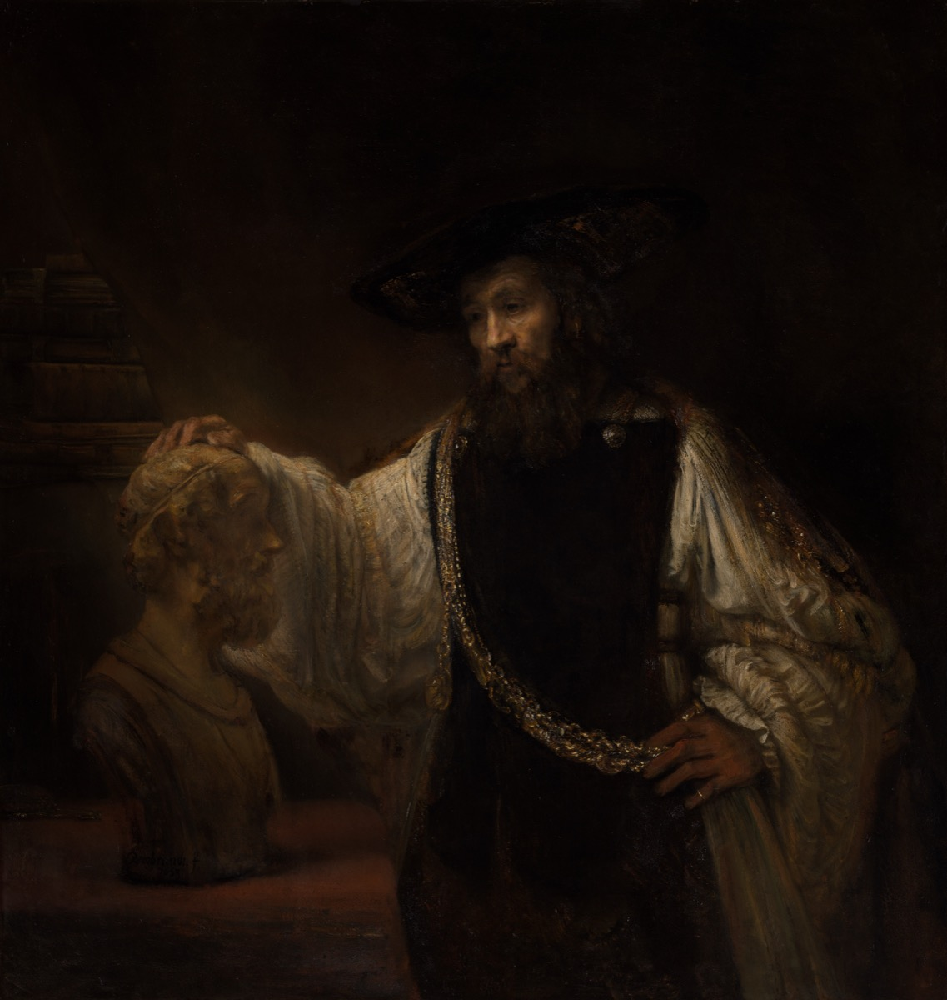

The Ethics, in plain English
The death of a child can damage even a good person's happiness, Aristotle says. He names that loss in Book 1.8, early in a work that asks what makes a human life good. Good character cannot protect us from everything.
His word for happiness is eudaimonia, which he connects with living well and doing well. You could feel pleased with a life spent treating people badly; that wouldn't make it a good life in his sense. He asks what is worth doing and what we need to do it.
The Nicomachean Ethics examines how practice, reasons for acting, and judgment about particular cases develop virtue. It ends by ranking philosophical contemplation above even a life of moral and political achievement.
This guide follows seven passages through that argument. The excerpts use W.D. Ross's translation; the surrounding explanations are mine. Use the arrows to move or the title to open the index. This is a selection from the work, with only brief treatment of its discussions of justice, responsibility, and weakness of will.

Stop 1 / Book 1.4 and 1.5
Agreement on a word
W.D. Ross / Book 1.4
Verbally there is very general agreement; for both the general run of men and people of superior refinement say that it is happiness, and identify living well and doing well with being happy; but with regard to what happiness is they differ, and the many do not give the same account as the wise.
1095a17-22People agree that they want to live well. Ask what living well consists of, and Aristotle finds disagreement even within one person's life: someone ill may say health, someone poor may say wealth. The name hasn't settled the question.
A life organized around bodily enjoyment seems to him beneath our capacities; he describes it contemptuously. Honor is more promising, but it depends on whoever bestows it. People also seek recognition from good judges as evidence that they deserve it, which points beyond recognition to virtue. Money is easier to set aside as the final goal, because its value lies in what it makes possible.
These objections don't remove pleasure or honor from a good life. In Book 1.7, he says we choose both for themselves, as we do reason and virtue, while also choosing them for the sake of happiness. We choose happiness without a further end beyond it. Later, he argues that excellent activity has pleasures of its own.
What does eudaimonia mean?
Ross writes happiness. Flourishing and living well can help an English reader hear the broader meaning: a claim about how a life is going, including what the person does. Aristotle still has to explain which activities count, and why.
Stop 2 / Book 1.7 to 1.10
A good life requires activity
W.D. Ross / Book 1.7, excerpts
human good turns out to be activity of soul in accordance with virtue, and if there are more than one virtue, in accordance with the best and most complete.
But we must add 'in a complete life'. For one swallow does not make a summer, nor does one day; and so too one day, or a short time, does not make a man blessed and happy.
1098a16-20A good flute-player plays the flute well. Could we say something similar of a human being? Nutrition and growth belong to plants too; perception belongs to other animals. He identifies our distinctive activity with reason: thinking, and acting in ways that can respond to reasons. Living well would mean exercising those capacities well.
Here virtue translates arete, excellence. In Book 2.6, he applies that word to eyes and horses as well as people. For humans it includes justice and courage, alongside excellence in thinking. His argument gives reason a governing place in the good life. A reasonable objection remains: identifying a distinctive human capacity doesn't by itself establish that exercising it should determine our highest good.
In Book 1.8, he observes that someone could possess a good character while asleep or otherwise inactive. Happiness requires its exercise. The claim has to hold over a life.
That life also needs external goods. Generosity requires something to give; friendship requires other people. Major losses can obstruct worthwhile activity and diminish happiness. His example is Priam, the prosperous king of Troy who suffers catastrophe in old age. Yet Book 1.10 rejects the demand to wait until death before calling anyone happy. We can describe a living person as happy, with the qualification that a human life remains vulnerable to change.
Stop 3 / Book 2.1 to 2.4
Practice changes the person
W.D. Ross / Book 2.1
For the things we have to learn before we can do them, we learn by doing them, e.g. men become builders by building and lyre-players by playing the lyre; so too we become just by doing just acts, temperate by doing temperate acts, brave by doing brave acts.
1103a32-1103b2Repeated dealings with other people help make us just or unjust. Responses to danger make us brave or cowardly. Aristotle adds that practice can produce bad musicians too. Repetition alone gives no guarantee.
He also distinguishes doing the right deed from doing it as a virtuous person would. In Book 2.4, the person must know what they're doing, choose the act for its own sake, and act from a settled character. Returning money because someone is watching can produce the right result without meeting those conditions. Guided practice develops the reasons and desires behind the act.
Pleasure and pain help him assess that development. The temperate person comes to enjoy acting temperately. But virtue doesn't make every good action feel easy. In Book 3.9, wounds and death are painful to a brave person; someone with a good life may feel its loss especially keenly.
Upbringing has enormous weight in this ethics. Families and laws train desires before a child can examine them. Aristotle also holds adults responsible for the character their choices help form, even when changing it later becomes difficult (Book 3.5). How fairly to assign that responsibility, given unequal beginnings, is a difficulty his account leaves us with.
Stop 4 / Book 2.6 and 2.7
The right response to this situation
W.D. Ross / Book 2.6
Virtue, then, is a state of character concerned with choice, lying in a mean, i.e. the mean relative to us, this being determined by a rational principle, and by that principle by which the man of practical wisdom would determine it.
1106b36-1107a2Aristotle's example of a mean relative to the person is a meal. The appropriate amount for Milo, an athlete, may be far too much for someone beginning training. Calculating the midpoint between two quantities won't tell either person what to eat.
Similarly, anger can be excessive, deficient, or appropriate. The judgment concerns its occasion, object, intensity, and duration. Courage involves fear and confidence: cowardice gives way to excessive fear, while rashness overestimates what can safely be faced. His central example is a noble death in battle; applying courage more broadly extends his account.
This supplies no formula for choosing an action. Some acts also fall outside it entirely. He names adultery, theft, and murder as acts whose very names imply wrongdoing. There is no virtuous amount of murder.
| Concern | Deficiency | Virtue | Excess |
|---|---|---|---|
| fear and confidence | cowardice | courage | rashness |
| bodily pleasure | insensibility | temperance | self-indulgence |
| giving and taking money | stinginess | generosity | wastefulness |
| anger | failure to feel appropriate anger | good temper | irascibility |
| claims about oneself | self-deprecation | truthfulness | boastfulness |
| amusement | boorishness | wit | buffoonery |
Selected examples from Book 2.7, 1107a28-1108a26. Labels simplified; courage involves two emotions, so it doesn't fit a single scale neatly.
Another translation of the definition
Book 2.6, 1106b36-1107a2, page 35 of Aristotle's Nicomachean Ethics (University of Chicago Press). Their characteristic is Ross's state of character; their prudent person is his man of practical wisdom.
Stop 5 / Book 6.5 to 6.13
Knowing what the case calls for
W.D. Ross / Book 6.5, excerpt
a true and reasoned state of capacity to act with regard to the things that are good or bad for man.
1140b4-6This is phronesis, practical wisdom: reasoning well about a good human life, with knowledge of the case in front of you. His example is diet. Knowing that light meats are healthy won't help if you don't know which meats are light. Knowing chicken is healthy may be more useful.
Experience matters because action concerns particulars. He allows young people mastery of mathematics while doubting that they can yet have practical wisdom. Mere age supplies no guarantee either. An experienced person can use their knowledge to pursue a bad end. In Book 6.12, he distinguishes that cleverness from practical wisdom, which also requires good character. Virtue directs our aims; practical wisdom helps us judge how to act toward them.
Judgment also matters beyond personal habits. In Book 5.10, he discusses equity, correcting a law where its general wording fails to cover an unusual case properly. The question is what the legislator would have decided had they known the circumstances. This supplies a specific reason to depart from literal application.
A person can know what they should do and fail to act on it. Book 7 investigates akrasia, weakness of will: appetite or anger can prevent that knowledge from guiding action. Aristotle distinguishes this from practical wisdom, which requires good character and the ability to act.
Stop 6 / Books 8 and 9
Why a happy person needs friends
W.D. Ross / Book 8.1, excerpt
For without friends no one would choose to live, though he had all other goods;
1155a5-6Friendship occupies two books of the Ethics. Aristotle's philia includes family attachments and relations among citizens as well as friendships between individuals. He asks what sustains these relationships and what friends owe one another.
He distinguishes three grounds of friendship: usefulness, pleasure, and goodness. Useful friends benefit one another; pleasurable friends enjoy each other's company. Either relationship may fade when the benefit or enjoyment changes. In the fullest friendship, people of good character want each other's good for the friend's own sake. They are also useful and pleasant to each other. The distinction concerns what grounds the attachment.
Knowing someone's character takes shared life. Close friendships of this kind must be few; he provides no ideal number for a lifetime. Nor does he promise permanence whatever happens: Book 9.3 asks what to do when a friend becomes seriously bad, and allows that a friendship can end when the person has changed beyond repair.
Why would someone already happy need friends? Because worthwhile activity can be shared. Friends think and act together, recognize good activity in one another, and make its continuation easier. He calls the friend another self (Book 9.4 and 9.9).
Stop 7 / Book 10.7 to 10.9
The highest life, according to Aristotle
W.D. Ross / Book 10.7, excerpt
But we must not follow those who advise us, being men, to think of human things, and, being mortal, of mortal things, but must, so far as we can, make ourselves immortal, and strain every nerve to live in accordance with the best thing in us;
1177b31-1178a2Aristotle ranks contemplation highest: exercising understanding of the most worthy objects of knowledge. Theoretical wisdom concerns first principles and their consequences, including the structure of the natural world. Understanding is valuable in itself. He thinks this activity uses our best capacity, can continue longer than practical action, and requires fewer external resources once life's necessities are supplied.
The comparison with divine life is part of his argument. Gods needn't face dangers or exchange money justly; their blessed activity is contemplation. Humans can participate in something like it for a limited time. Even so, he explicitly says the philosopher can think better with fellow workers, still needs bodily health and food, and chooses to act virtuously while living among others.
Book 10.8 calls the life of the other virtues happy “in a secondary degree.” That ranking is harder to absorb than advice to leave a few hours for thought. Readers disagree over how it fits the earlier account: does happiness include the range of worthwhile activities, or does contemplation have a privileged role that orders the rest? Richard Kraut's account of the dispute defends continuity between the ethical virtues and the philosophical life.
The work ends by returning to education and law. Arguments alone won't make everyone good, Aristotle says in Book 10.9. People need an upbringing and a political community that support good conduct.
Who gets to live this way?
The opportunities assumed by this ethics were unequally distributed, and Aristotle defended that inequality. In the Politics, Book 1.5 and 1.13, he argues that some people are naturally suited to slavery and that a woman's deliberative faculty is “without authority” (Benjamin Jowett's translation). He records objections to slavery in his own time. These claims were contested then too.
There are limits inside the Ethics itself. Book 5.6 restricts political justice to free and equal people; Book 8.11 distinguishes treating an enslaved person as a human from treating them as a slave. Extending the same standing and opportunities to everyone requires changing parts of his account. His claims about whose reason deserves authority are part of that work.
Text and sources
Aristotle lived from 384 to 322 BC. The Ethics belongs to his fourth-century Greek work; its exact composition and editing are harder to date. Its surviving form resembles teaching material, and its title is traditionally connected with Nicomachus, the name of both his father and his son.
- Translation. W.D. Ross, Ethica Nicomachea, Oxford, first edition 1925. Wikisource includes the preface and scan. The MIT Internet Classics Archive supplies another readable copy, with occasional transcription errors.
- Locations. Book and chapter numbers locate the argument. References such as 1098a16 identify a page, column, and line in the standard Bekker numbering. The featured passages are excerpts. A lowercase opening or trailing semicolon preserves an excerpt's place within Ross's sentence; surrounding prose is explanation.
- Interpretation. Richard Kraut, “Aristotle's Ethics,” Stanford Encyclopedia of Philosophy, especially its discussion of happiness and contemplation.
- Comparison. Robert C. Bartlett and Susan D. Collins, Aristotle's Nicomachean Ethics, University of Chicago Press, 2011, Book 2.6, page 35.